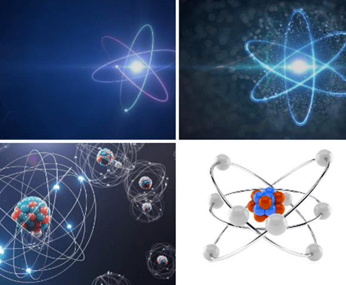
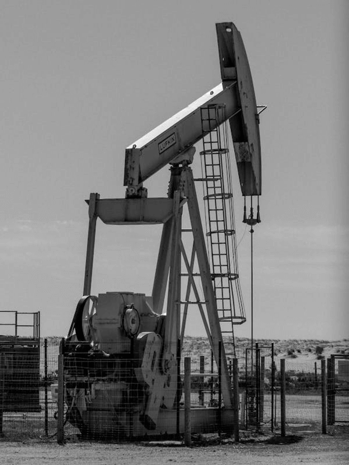
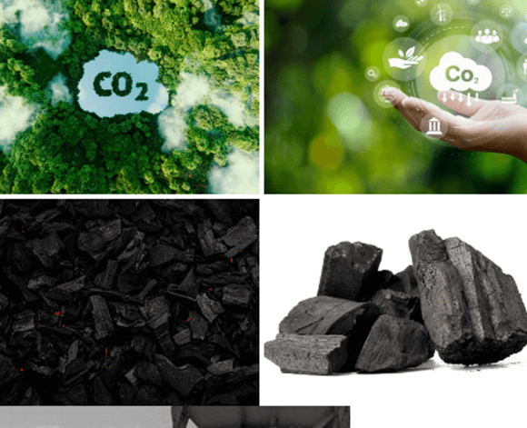
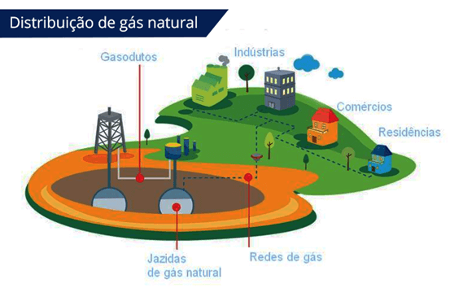
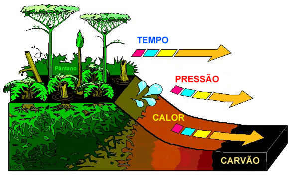

Texto 15 - Fontes de energia I – combustíveis fósseis
Conteúdo: Energias renováveis e não-renováveis; Petróleo; Gás natural; Carvão Mineral.
Objetivo: Compreender o papel da matriz energética no período atual, as principais questões econômicas, políticas, territoriais ligada à comercialização e distribuição do petróleo, do gás natural e do carvão mineral no mundo.
Digite seu nome
Introdução
No texto anterior, vimos o processo infinito do ciclo das rochas e sua
relação com o clima e a tectônica de placas.
Na aula de hoje, vamos estudar as fontes de energia que desempenham um papel fundamental no nosso cotidiano e no desenvolvimento econômico global: os combustíveis fósseis. O petróleo, o gás natural e o carvão mineral são as principais fontes de energia não renováveis que alimentam a maior parte da matriz energética mundial.
Esses recursos são indispensáveis para o funcionamento da economia global, desde o transporte até a produção industrial, mas também têm impactos significativos no meio ambiente, devido à sua contribuição para o efeito estufa e as mudanças climáticas.
Vamos explorar como esses combustíveis fósseis são extraídos, suas vantagens e problemas associados ao seu uso, e as questões políticas e econômicas envolvidas na exploração e comercialização desses recursos.
Questões para serem respondidas no caderno sobre o tema da aula de hoje:
1. O que é energia e como ela se manifesta no universo?
2. Diferencie energias renováveis e não renováveis, dando exemplos de cada tipo.
3. O que são combustíveis e qual a principal diferença entre combustíveis fósseis e fontes de energia renovável?
4. Explique como o petróleo é formado e qual sua importância para a economia mundial.
5. Quais são os principais usos do gás natural e como ele é extraído?
6. Como o carvão mineral é utilizado na geração de energia e quais são seus impactos ambientais?
7. O que é o Protocolo de Cartagena e qual sua importância no contexto ambiental?
8. Explique a relação entre o aumento do consumo de combustíveis fósseis e os problemas ambientais globais.
9. Quais são as alternativas mais promissoras para substituir os combustíveis fósseis no futuro?
10. Por que é importante buscar fontes de energia renováveis e o que pode ser feito para reduzir a dependência de combustíveis fósseis?
Energia – O que é?

A energia é um conceito fundamental para entender o funcionamento do universo, pois está presente em todos os processos naturais e tecnológicos. Ela é uma grandeza física que pode ser transformada de uma forma para outra, mas, de acordo com a Lei da Conservação da Energia, ela nunca é criada nem destruída, apenas convertida entre diferentes formas.
Em sua essência, a energia está por trás de todos os processos que acontecem no mundo, seja no nível mais microscópico, como a movimentação das partículas atômicas, ou no nível mais macroscópico, como a movimentação de veículos e a produção de eletricidade.
Existem diversas formas de energia, que podem ser classificadas de acordo com a maneira como se manifestam no nosso cotidiano e na natureza. A seguir, apresento algumas das principais formas de energia:
Energia Química
A energia química é a energia armazenada nas ligações químicas das substâncias. Essa forma de energia está presente em alimentos, combustíveis, baterias e até nos tecidos vivos. Quando essas substâncias reagem, as ligações químicas se quebram ou se formam, liberando ou absorvendo energia. Exemplos de energia química incluem:
Alimentos: Quando consumimos alimentos, nosso corpo converte a energia química armazenada nesses alimentos em energia que nos permite realizar atividades físicas.
Combustíveis: O petróleo, o gás natural e o carvão são fontes de energia química. Quando queimados, liberam energia que é convertida em calor ou em movimento (como nos motores dos veículos).
Energia Mecânica
A energia mecânica está associada ao movimento ou à posição dos corpos. Ela é a soma da energia cinética (relacionada ao movimento) e da energia potencial (relacionada à posição dos corpos em relação a outras forças, como a gravidade). Exemplos de energia mecânica incluem:
Movimento de veículos: A energia mecânica está presente no movimento de carros, bicicletas, aviões, etc.
Energia de um pêndulo: Quando um pêndulo se move, ele alterna entre energia potencial (quando está mais alto) e energia cinética (quando está se movendo).
Energia Térmica
A energia térmica está relacionada ao calor. É a forma de energia que está associada ao movimento das partículas de uma substância. Exemplos de energia térmica incluem:
Aquecimento de água: Quando aquecemos água em uma panela, a energia térmica proveniente do fogo faz com que as moléculas de água se movam mais rapidamente.
Calor no forno: A energia térmica gerada por um forno é usada para aquecer alimentos.
Energia Elétrica
A energia elétrica é a energia dos elétrons em movimento. É amplamente utilizada para alimentar aparelhos eletrônicos, iluminar ambientes e movimentar máquinas. Exemplos de energia elétrica incluem:
Lâmpadas: A energia elétrica é convertida em luz, iluminando os ambientes.
Aparelhos eletrônicos: Computadores, televisores e celulares dependem de energia elétrica para funcionar.
Energia Hidráulica
A energia hidráulica é gerada pelo movimento da água, sendo aproveitada principalmente em usinas hidrelétricas. Exemplos incluem:
Hidrelétricas: A água em movimento gera eletricidade ao passar por turbinas.
Moinhos de água: Utilizados no passado para moer grãos.
Energia de Radiação
A energia de radiação refere-se à energia transportada por ondas eletromagnéticas, como a luz solar, que é fundamental para a vida na Terra. Exemplos incluem:
Luz solar: Pode ser convertida em energia elétrica através de painéis solares.
Radiação térmica: Todos os corpos emitem radiação infravermelha devido à sua temperatura.
Energias Renováveis e Não Renováveis
A energia é essencial para o funcionamento da sociedade moderna, e sua origem pode ser dividida em duas grandes categorias: energias renováveis e energias não renováveis. Cada uma delas possui características distintas em relação à sua disponibilidade, impacto ambiental e formas de utilização.
Energias Renováveis
Fonte: pexels.com
As energias renováveis são aquelas que fazem parte de um ciclo natural, ou seja, estão constantemente sendo reabastecidas pela natureza. Esse tipo de energia possui um limite de utilização muito alto ou praticamente infinito, pois os recursos que a geram são continuamente renovados. Isso as torna uma opção mais sustentável, pois não se esgotam com o uso contínuo. As principais fontes de energias renováveis incluem:
Água
A energia hídrica é gerada pelo movimento da água, mais comumente aproveitada em hidrelétricas. A água represada em barragens é liberada, e seu movimento é utilizado para acionar turbinas que geram eletricidade. A energia da água é considerada renovável, pois a água está em constante ciclo natural de evaporação e precipitação. A grande vantagem dessa energia é a sua alta capacidade de geração de eletricidade, sendo uma das fontes mais utilizadas em muitos países. Exemplo: Usinas hidrelétricas, como a de Itaipu, no Brasil, que produzem grande parte da energia elétrica do país.
Ventos
A energia eólica é gerada a partir da força dos ventos. Turbinas eólicas capturam a energia do vento e a convertem em eletricidade. O vento é um recurso abundante e constante, principalmente em regiões litorâneas e áreas abertas. A energia eólica é considerada uma das fontes mais limpas e sustentáveis, pois não gera poluição nem resíduos. Exemplo: Parques eólicos no nordeste do Brasil, como o Parque Eólico Lagoa do Barro, que geram eletricidade a partir da força dos ventos.
Biomassa
A biomassa refere-se à energia derivada de material orgânico, como madeira, resíduos agrícolas, lixo orgânico e até algas. Esse material pode ser queimado para gerar calor ou transformado em biocombustíveis, como o etanol e o biodiesel. A principal vantagem da biomassa é que ela pode ser gerada a partir de resíduos, ajudando a reduzir o desperdício e a poluição. Exemplo: O uso de resíduos de madeira para gerar energia em usinas termoelétricas ou a produção de etanol a partir da cana-de-açúcar no Brasil.
Energia Solar
A energia solar é gerada a partir da radiação solar. Ela pode ser captada por painéis fotovoltaicos, que convertem a luz solar diretamente em eletricidade, ou por coletor solar, que converte o calor solar em energia térmica. A energia solar é uma das fontes mais promissoras de energia renovável, pois o sol é uma fonte praticamente ilimitada e disponível em grande parte do planeta. Exemplo: Painéis solares instalados em residências ou grandes usinas solares, como a Usina Solar de Curuá, no Brasil.
Energias Não Renováveis

Fonte: pexels.com.
As energias não renováveis, por outro lado, são recursos finitos, ou seja, sua disponibilidade é limitada. Esses recursos não se renovam ou se reabastecem a uma taxa suficientemente rápida para acompanhar seu ritmo de consumo. As energias não renováveis são geralmente associadas à queima de combustíveis fósseis, que liberam gases poluentes e contribuem para o aquecimento global. As principais fontes de energia não renovável incluem:
Carvão
O carvão mineral é um combustível fóssil formado a partir da decomposição de matéria orgânica, como plantas, ao longo de milhões de anos. Ele tem sido uma das principais fontes de energia desde a Revolução Industrial e é amplamente utilizado para gerar eletricidade em termelétricas e como combustível para indústrias. Apesar de ser uma fonte abundante em algumas regiões do mundo, o carvão é altamente poluente, liberando dióxido de carbono (CO2), óxidos de enxofre e outros poluentes no ar. Exemplo: Usinas termoelétricas que utilizam carvão como principal fonte de energia, como as que operam na China e na Índia.
Petróleo
O petróleo é uma mistura complexa de hidrocarbonetos que pode ser refinada para produzir uma variedade de produtos, como gasolina, diesel, querosene, lubrificantes e asfalto. O petróleo é a principal fonte de energia para transporte, aquecimento e produção de eletricidade. Embora seja uma fonte de energia muito eficiente, sua extração é difícil e poluente, e é um recurso finito, ou seja, não será disponível para sempre. Exemplo: Refinarias de petróleo que produzem gasolina e diesel, como as operadas pela Petrobras no Brasil.
Gás Natural
O gás natural é uma fonte de energia composta principalmente por metano, sendo formado da mesma maneira que o petróleo, através da decomposição de matéria orgânica. Ele é considerado menos poluente do que o carvão e o petróleo, mas, ainda assim, a sua queima libera CO2. O gás natural é utilizado principalmente para gerar eletricidade, aquecer ambientes e como combustível para veículos. No entanto, a falta de infraestrutura necessária, como gasodutos, limita sua distribuição. Exemplo: Usinas termelétricas que utilizam gás natural, como as localizadas no estado do Rio de Janeiro, ou sua utilização como combustível em carros e ônibus.
Combustíveis – O que são?

Fonte: pexels.com
Combustíveis são substâncias que podem ser queimadas para a produção de energia. Eles são essenciais para o funcionamento de muitos processos industriais, no setor de transportes e para o fornecimento de energia elétrica em diversas partes do mundo. Quando um combustível é queimado, ele libera energia na forma de calor, que pode ser utilizada de várias maneiras, como para movimentar máquinas, gerar eletricidade ou aquecer ambientes.
A queima de combustíveis resulta em reação química que libera energia térmica e pode ser usada para transformar essa energia em outros tipos, como energia mecânica ou elétrica. Dependendo do tipo de combustível, essa reação pode ser mais ou menos eficiente, além de gerar diferentes impactos ambientais.
Tipos de Combustíveis
Os combustíveis podem ser classificados em várias categorias, mas as mais comuns são:
Lenha
A lenha é um combustível natural que vem das árvores e é utilizado principalmente para aquecimento e cozimento. Ela é um dos combustíveis mais antigos e ainda é bastante usada em várias partes do mundo, especialmente em áreas rurais. Quando queimada, a lenha libera calor, mas também emite dióxido de carbono (CO2) e outras substâncias que podem contribuir para a poluição do ar e o efeito estufa. Exemplo: Lenha queimada em fogões a lenha ou lareiras para aquecer a casa.
Carvão
O carvão é um combustível fóssil que resulta da decomposição de matéria orgânica, como plantas, ao longo de milhões de anos. Ele possui um alto poder calorífico e é amplamente utilizado em termelétricas, indústrias e, no passado, foi a principal fonte de energia durante a Revolução Industrial. O carvão, no entanto, é um dos combustíveis mais poluentes, pois sua queima emite grandes quantidades de dióxido de carbono (CO2), óxidos de enxofre e outros poluentes atmosféricos. Exemplo: Usinas termoelétricas que queimam carvão para gerar eletricidade.
Petróleo
O petróleo é um líquido viscoso e complexo composto por hidrocarbonetos, encontrado no subsolo em grandes reservatórios. Ele é a principal fonte de combustível para transportes, principalmente em forma de gasolina, diesel e querosene. Além disso, o petróleo também é refinado para produzir uma série de outros produtos, como plásticos, óleos lubrificantes e asfalto. Embora o petróleo seja eficiente, sua extração e queima resultam em poluição do ar e contribuem para o aquecimento global. Exemplo: Gasolina utilizada em automóveis ou diesel em caminhões.
Gás Natural
O gás natural é uma fonte de energia fóssil formada pela decomposição da matéria orgânica no subsolo, de forma semelhante ao petróleo. Ele é principalmente composto por metano (CH4) e, quando comparado ao carvão e ao petróleo, é uma fonte de energia mais limpa, pois emite menos poluentes. O gás natural é utilizado para gerar eletricidade, aquecer residências e como combustível para veículos. Porém, sua distribuição é limitada pela infraestrutura necessária, como gasodutos. Exemplo: Uso do gás natural em termelétricas ou em carros movidos a gás.
Biocombustíveis
Os biocombustíveis são fontes de energia renováveis derivadas de matéria orgânica, como vegetais e resíduos orgânicos. O etanol (produzido a partir da cana-de-açúcar) e o biodiesel (feito a partir de óleos vegetais ou gordura animal) são os exemplos mais comuns. Os biocombustíveis têm a vantagem de serem mais sustentáveis em comparação com os combustíveis fósseis, pois podem ser produzidos de forma renovável. Contudo, sua produção também pode ter impactos ambientais, como desmatamento e uso excessivo de recursos naturais. Exemplo: Etanol utilizado como combustível em veículos no Brasil.
Impactos Ambientais dos Combustíveis Fósseis
Embora os combustíveis fósseis, como o carvão, o petróleo e o gás natural, desempenhem um papel vital na geração de energia e no desenvolvimento industrial, sua queima libera grandes quantidades de dióxido de carbono (CO2), um dos principais gases do efeito estufa. Isso contribui para o aquecimento global, a mudança climática e outros problemas ambientais, como a poluição do ar e chuvas ácidas. Além disso, a extração desses combustíveis pode causar danos aos ecossistemas, como o desmatamento e a contaminação dos corpos d'água.
Por esse motivo, muitos países estão tentando reduzir a dependência de combustíveis fósseis e adotar fontes de energia mais limpas e sustentáveis, como as energias renováveis. O objetivo é diminuir o impacto ambiental e garantir uma oferta de energia mais segura e sustentável para as gerações futuras.
Petróleo
O petróleo é uma mistura complexa de hidrocarbonetos formada a partir da decomposição de matéria orgânica ao longo de milhões de anos. Ele é extraído do subsolo e refinado por meio de um processo chamado destilação fracionada, que separa os seus componentes de acordo com seus pontos de ebulição.
A partir desse processo, o petróleo gera diversos produtos essenciais, como:
Gasolina e diesel para veículos.
Querosene para aviões.
Óleos lubrificantes para motores e máquinas.
Óleo combustível usado em termelétricas e indústrias.
Asfalto para a construção de estradas.
Diversos produtos químicos e derivados utilizados em diversas indústrias.
Vantagens
Alta eficiência energética, permitindo a produção de grandes quantidades de energia.
Fonte essencial para processos industriais, como transporte e fabricação de plásticos e químicos.
Problemas
É um recurso finito e sua extração é cada vez mais difícil, exigindo tecnologias complexas e caras.
A extração e o uso do petróleo geram impactos ambientais significativos, como o aumento da poluição do ar, o aquecimento global e mudanças climáticas, além de riscos de derramamentos e contaminação de ecossistemas.
Gás Natural

O gás natural é uma fonte de energia que se forma a partir da decomposição da matéria orgânica no subsolo, de maneira semelhante ao petróleo. Ele é composto principalmente por metano e é utilizado em diversas áreas, como combustível para veículos e na geração de eletricidade.
Vantagens
Menos poluente em comparação com o carvão e o petróleo, pois emite menos dióxido de carbono e outros poluentes quando queimado.
Mais barato em relação a outras fontes de energia não renováveis, tornando-se uma opção mais econômica para diversos usos industriais e residenciais.
Problema
A falta de infraestrutura necessária, como gasodutos, para distribuir o gás natural em algumas regiões dificulta seu acesso e uso em larga escala, especialmente em áreas mais afastadas ou rurais.
Carvão Mineral

O carvão mineral é uma rocha sedimentar formada a partir da decomposição e transformação da matéria orgânica, ao longo de milhões de anos. Durante a Revolução Industrial, o carvão foi um dos combustíveis mais utilizados para a produção de calor e eletricidade. Ele é classificado em quatro tipos, com base no grau de transformação da matéria orgânica:
Turfa
Linhito
Hulha
Antracito (o de maior grau de transformação)
Vantagens
Alto poder calorífico, ou seja, gera uma grande quantidade de energia ao ser queimado.
Baixo custo de extração, o que torna o carvão acessível para várias indústrias.
Problemas
A mineração do carvão é insalubre para os trabalhadores, pois expõe a riscos de saúde devido à inalação de poeiras e gases.
Contaminação do ar e dos rios devido à poluição gerada pela queima do carvão.
É uma fonte de energia altamente poluente, provocando chuva ácida e problemas respiratórios, além de contribuir significativamente para as mudanças climáticas.
O Protocolo de Cartagena
O Protocolo de Cartagena é um acordo internacional criado para proteger a biodiversidade e garantir a segurança no comércio e utilização de organismos geneticamente modificados (OGMs). Ele foi adotado em 2000, sob a Convenção sobre Diversidade Biológica, e tem como objetivo prevenir riscos à saúde humana e ao meio ambiente decorrentes da liberação de OGMs no meio ambiente.
Embora o Protocolo de Cartagena não esteja diretamente relacionado aos combustíveis fósseis, ele é relevante quando falamos de sustentabilidade e políticas globais. O acordo reflete a crescente preocupação com as práticas que podem afetar a biodiversidade, incluindo a produção e o uso de energias, como a agricultura de biocombustíveis, que pode envolver o uso de organismos geneticamente modificados. Dessa forma, ele ajuda a entender como as políticas internacionais buscam equilibrar o desenvolvimento energético com a preservação ambiental.
Não existe pergunta boba! A Ciência é feita de perguntas!
P:O que caracteriza as energias renováveis e não-renováveis e qual a diferença entre elas?
R:
As energias renováveis são aquelas que são naturalmente reabastecidas, como a energia solar, eólica e hidrelétrica, enquanto as não-renováveis, como o petróleo, gás natural e carvão mineral, são fontes de energia que se esgotam com o tempo, pois sua formação leva milhões de anos. A principal diferença é que as energias renováveis têm um ciclo contínuo e sustentado, enquanto as não-renováveis são finitas e contribuem para o impacto ambiental, como a poluição e as mudanças climáticas.
P:Por que o petróleo é considerado uma fonte de energia tão importante, apesar de seus impactos ambientais?
R:
O petróleo é uma fonte de energia crucial para a economia global devido à sua alta eficiência energética, sendo utilizado em diversos produtos essenciais, como gasolina, diesel, querosene, óleos lubrificantes e até asfalto. Apesar de seus impactos ambientais significativos, como a poluição do ar e do solo, e o risco de derramamentos, ele continua sendo amplamente utilizado devido à sua versatilidade e à grande demanda nos setores de transporte e indústria.
P:Quais são as vantagens e desvantagens do uso do carvão mineral como fonte de energia?
R:
O carvão mineral tem a vantagem de gerar uma grande quantidade de energia com baixo custo de extração, o que o torna acessível para várias indústrias. No entanto, seu uso como fonte de energia é altamente poluente, provocando problemas ambientais como a emissão de gases de efeito estufa, a chuva ácida e a degradação da qualidade do ar. Além disso, a mineração do carvão é insalubre e pode causar sérios danos à saúde dos trabalhadores.